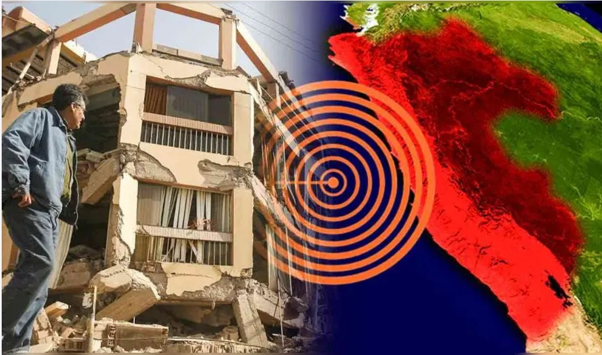

1. Brecha Técnica y Falsas Alarmas
Los ciudadanos confunden la caída superficial de tarrajeo o pintura con fallas estructurales en vigas y columnas, saturando las líneas telefónicas y desviando brigadas vitales.
Identifica señales visibles de daño en tu vivienda después de un sismo. EvakuaPE te orienta para registrar lo que observas y actuar con precaución.
La evaluación rápida orienta; no certifica la seguridad estructural ni reemplaza una inspección profesional.

Reporte desde un lugar seguro. No necesita una cuenta.
1. Foto de fachada 2. Detalle 3. Evaluación
La falta de criterios técnicos sencillos y el estrés agudo provocan saturación en las centrales de emergencia y retrasos críticos en el rescate.
Los ciudadanos confunden la caída superficial de tarrajeo o pintura con fallas estructurales en vigas y columnas, saturando las líneas telefónicas y desviando brigadas vitales.
El pánico y los temblores en las manos impiden leer formularios extensos o escribir descripciones detalladas en teclados pequeños durante los primeros minutos de crisis.
La interrupción de redes móviles deja incomunicados a afectados y rescatistas, obligando a operar con fichas físicas bajo polvo, réplicas y reflejo solar intenso.
Cada módulo de EvakuaPE se adapta a las capacidades físicas, cognitivas y operativas de quienes enfrentan el desastre.
Cada indicador combina código de color, geometría iconográfica explícita y descripción clara para garantizar accesibilidad total.
Rajaduras diagonales cruzadas en columnas o muros portantes. Indican falla por corte estructural e inminente peligro de colapso ante réplicas.
Desprendimiento profundo del concreto que deja al descubierto las varillas de acero o estribos deformados en vigas o columnas.
Si el canto de una moneda de S/ 1 ingresa en la abertura del muro, la fisura supera el umbral superficial y requiere evaluación fotográfica.
Desprendimiento superficial de revestimiento, yeso o fisuras finas sin comprometer columnas, vigas ni muros portantes.